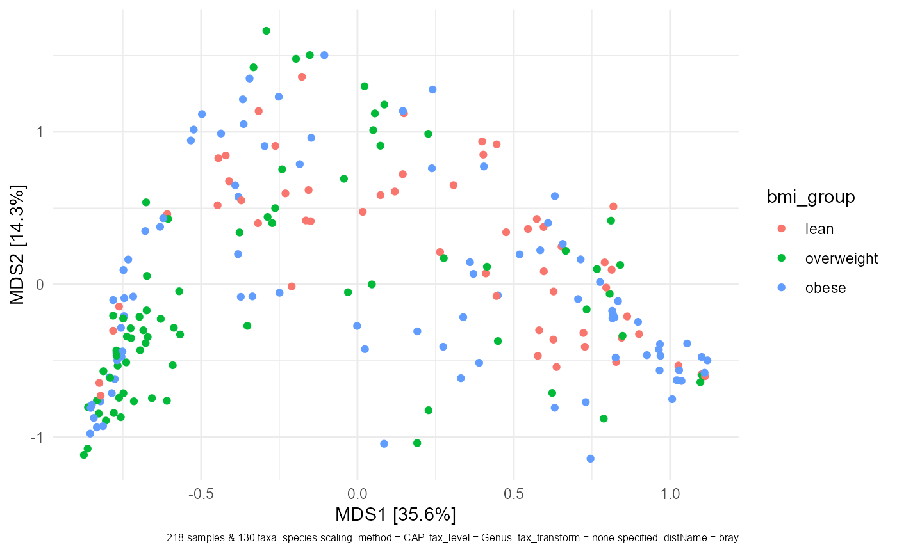

Wrapper for vegan adonis/adonis2, takes the output of dist_calc (a list containing a phyloseq object and calculated distance matrix)
permanova( data, variables, interactions = NULL, complete_cases = TRUE, n_processes = 1, n_perms = 999, seed = NULL, adonis2 = FALSE, verbose = TRUE, return = "all" )
| data | list output from dist_calc |
|---|---|
| variables | character vector of variables to include in model |
| interactions | interactions between variables, written in the style of e.g. "var_a * var_b" |
| complete_cases | if TRUE, drops observations if they contain missing values |
| n_processes | how many parallel processes to use? (uses parallel::makePSOCKcluster) |
| n_perms | how many permutations? |
| seed | set a random number generator seed to ensure you get the same results each run |
| adonis2 | use adonis2 (with by = "margin") instead of adonis (better if you have interactions) |
| verbose | sends messages about progress if true |
| return | what parts of return list to return, defaults to all parts |
list containing permanova results and input objects
Drops observations with missing values if complete_cases is TRUE, otherwises throws an error.
library(phyloseq) library(vegan) data("dietswap", package = "microbiome") # add some missings to demonstrate automated removal sample_data(dietswap)$sex[3:6] <- NA # compute distance testDist <- dietswap %>% tax_agg("Genus") %>% dist_calc("bray") PERM <- testDist %>% permanova( seed = 1, variables = c("sex", "bmi_group"), n_processes = 1, n_perms = 99 )#>#>#>#> List of 4 #> $ info :List of 3 #> $ permanova:List of 7 #> ..- attr(*, "class")= chr "adonis" #> $ distMat : 'dist' num [1:23653] 0.764 0.731 0.728 0.664 0.744 ... #> ..- attr(*, "Labels")= chr [1:218] "Sample-1" "Sample-2" "Sample-7" "Sample-8" ... #> ..- attr(*, "Size")= int 218 #> ..- attr(*, "call")= language as.dist.default(m = as.matrix(distMat)[keepers, keepers]) #> ..- attr(*, "Diag")= logi FALSE #> ..- attr(*, "Upper")= logi FALSE #> $ ps :Formal class 'phyloseq' [package "phyloseq"] with 5 slotsPERM2 <- testDist %>% permanova( seed = 1, variables = c("sex", "bmi_group"), interactions = "sex * bmi_group", n_processes = 1, n_perms = 99, adonis2 = TRUE )#>#>#>PERM2$permanova#> Permutation test for adonis under reduced model #> Marginal effects of terms #> Permutation: free #> Number of permutations: 99 #> #> vegan::adonis2(formula = FORMULA, data = metadata, permutations = n_perms, by = "margin", parallel = cl) #> Df SumOfSqs R2 F Pr(>F) #> sex:bmi_group 1 0.916 0.02369 5.5843 0.01 ** #> Residual 213 34.958 0.90351 #> Total 217 38.691 1.00000 #> --- #> Signif. codes: 0 '***' 0.001 '**' 0.01 '*' 0.05 '.' 0.1 ' ' 1# take the same distance matrix used for the permanova and plot an ordination PERM2 %>% ord_calc("PCoA") %>% ord_plot(color = "bmi_group")# this ensures any samples dropped from the permanova for having missing values # in the covariates are NOT included in the corresponding ordination plot